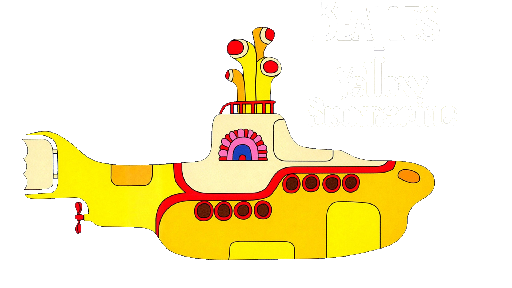

born in Annecy on June 21, 1987
Programmer in development...
After a long artistic career, I retired to Lyon to begin a professional retraining. In study at the Wagon since October, it will take more than one web page to discover me. Apart from an frantic life, I was the hidden (but no less real) leader of the Beatles in another life.
 About us